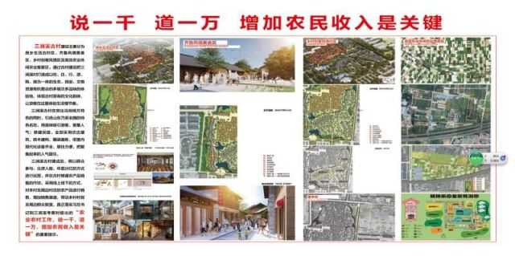
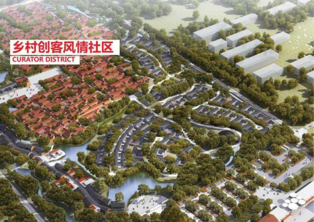
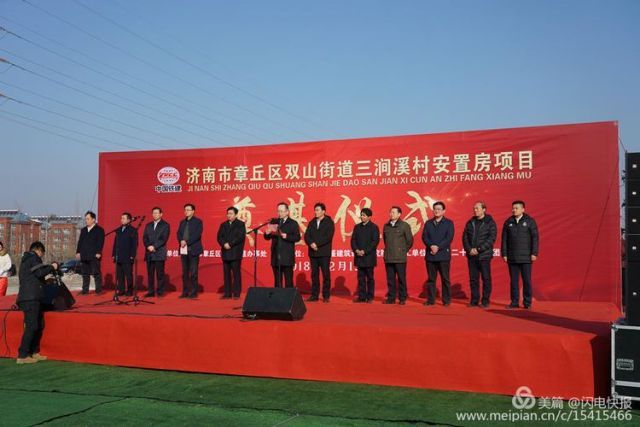
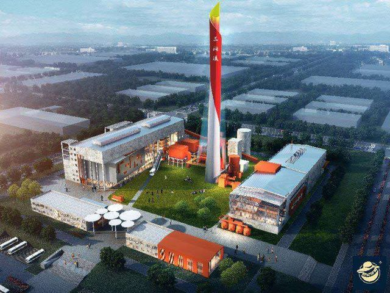
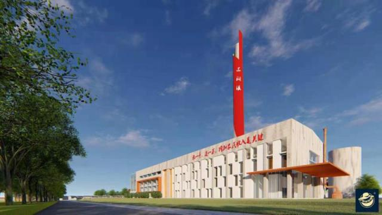
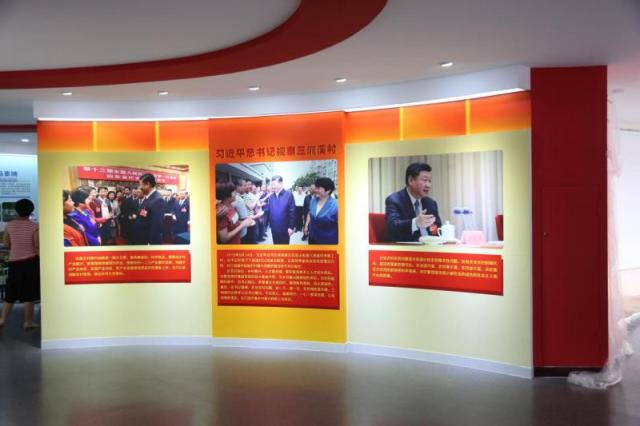

章丘三涧溪村谱写乡村振兴新篇章
2018年12月31日晚，习近平总书记在新年贺词中提到了济南章丘三涧溪村，让这个村再次成为社会关注的焦点。如今的三涧溪村，依托党建引领，乡村振兴扎实推进，在率先高水平实现全面小康征程上迈出新步伐。村民们住上了崭新的楼房，生活越过越好。正在建设的三涧溪古村、乡村振兴学院也将让这个村庄在未来焕发新的活力。
产业振兴让农民腰包鼓起来
在三涧溪村，笔直的马路宽阔整洁，崭新的楼房整齐气派，创业、金融、医疗卫生等配套服务设施一应俱全。然而，过去的三涧溪村却是另外一副模样。垃圾成堆、污水横流，没有一条硬化路，村民住房破旧，六年换了六任村党支部书记……现任村党总支书记高淑贞上任后，通过抓党建促发展，让党员群众拧成一股绳。

农业农村工作，说一千、道一万，增加农民收入是关键。三涧溪村深度整合资源，依托北农南工中旅的产业布局，精心策划一批产村融合、三产融合项目，富民强村道路更加宽广。
在特色项目上，三涧溪村依托济南源虎食品有限公司，建立一处猪猪乐园，修建改建20-30个农业特色大棚，将800多亩的分散园区集约开发、集中管理，形成绿色发展新亮点。在利益联结上，三涧溪以农村集体产权制度改革为契机，实施国有股份投资、集体资产入股、村民入社参与，统筹盘活放大各类资源增值效应，让广大农户分享改革利益，可带动200户村民进入产业化链条，预计年均增收1万余元。同时，投资3000余万元，高标准改造园区路网等基础设施，为优质项目落户提供了广阔空间。目前，全村入园工作人员达到700人，年均收入3万元以上。
“听到习总书记新年贺词里提到了三涧溪村，我当时激动的哭了。习总书记如此亲民，不管多忙都心系百姓。”村民赵顺利说，半年前习总书记来家里的情景，他仍历历在目。当赵顺利谈到自家住房和工资收入的变化，赵顺利高兴地笑了。“我今后的梦想是当个小老板，给外地游客做济南特色美食，比如章丘特色名吃煎饼卷大葱。”说到新年愿望，赵顺利对未来展开了美好的憧憬。

切实改善居民生产生活条件，加速乡村振兴，章丘区双山街道三涧溪村通过前期调研和发展规划，充分结合区域发展实情，顺应村民改善居住条件的意愿，双山街道三涧溪村安置房建设项目这一民生工程应运而生。项目由济南市章丘区双山街道牵头开发，设计单位为山东华盛建筑设计研究院，施工单位为中铁二十五局集团有限公司。
文化名村焕发新活力
三涧溪村有着千年古韵，历史文化遗存丰富，在北方村居很有代表性。下一步，三涧溪村将通过古街区、古地道、古民俗“三古”开发挖掘，规划“一村、两街、三溪、多区”的总体架构，即依托三涧溪古村，建设富荣古街、美食新街，修复借势穿村而过的三条小溪，打造原乡古村区、风情美食区、高效农业区、乡村创客区、康养乡居区等功能区，构建赏游娱学农食购宿等多种功能于一体的乡村旅游典范。目前，投资1000万的古村大道基本建成，美食新街区正进行内外装修。

为整合古村功能，改善村民居住条件，这个村在前期社区化安置40%村民基础上，展开新一轮旧村改造。“安置房建设项目是旧村改造，切实改善村民居住生活条件的有效举措，后期将因地制宜配套建设美食街、古村大道、康养院落等基础设施。”据三涧溪村委工作人员介绍，该工程包含东西两个地块，总占地面积145亩，总建筑面积约34万平方木，其中地上22万平方米，地下12万平方米，项目总投资12.2亿元，工期预计720天，待项目建成使用后，可实现1760套房屋进行安置，能够解决该村剩余60%的村民新楼入住需求。


三涧溪村还建成了300多平方米的乡村振兴展馆。展馆突出留住乡村记忆、传承家国情怀、促进乡村振兴主题，把握时间逻辑、理论逻辑两条主线，打造古村、党建、乡村振兴三个板块，展示千年古村的文化历史、先贤事迹、民俗技艺，展示乡村的发展历程、振兴实践，着重展示总书记视察山东考察三涧溪村的指示要求、珍贵资料，以及各级领导对三涧溪村的关怀，成为激励广大干部群众学习实践习近平新时代中国特色社会主义思想的重要阵地。

据了解，在改造乡村振兴展馆的同时，三涧溪村同步规划建设了乡村振兴学院，预计2019年5月建成。学院主要是整合用好村东原城东热源厂资源，创意化改造建设工业主题餐厅、工业主题酒店、锅炉咖啡等载体，建设农产品线上线下展示平台。学院将与山东省委农工部门、山东省社科院、山东大学等合作，采用课堂培训与基地实训相结合等方式，培训乡村振兴的中坚力量。与乡村旅游项目结合，学院还将实现培训、就餐、住宿、文化体验一条龙服务。


 意见反馈
意见反馈